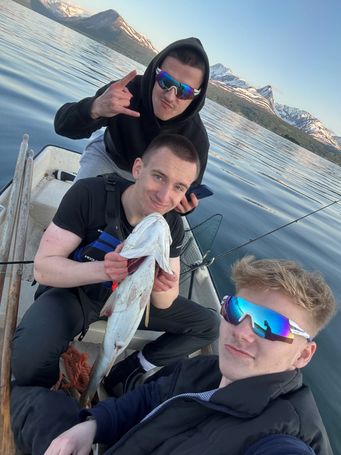
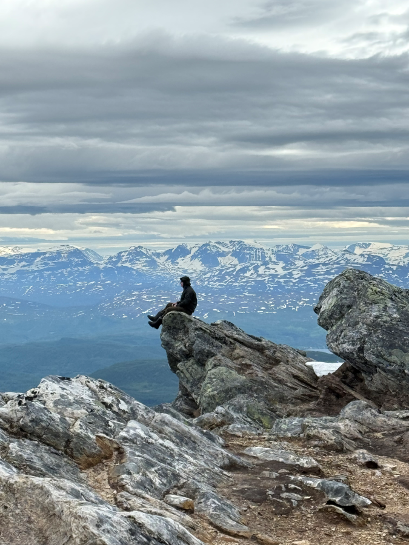
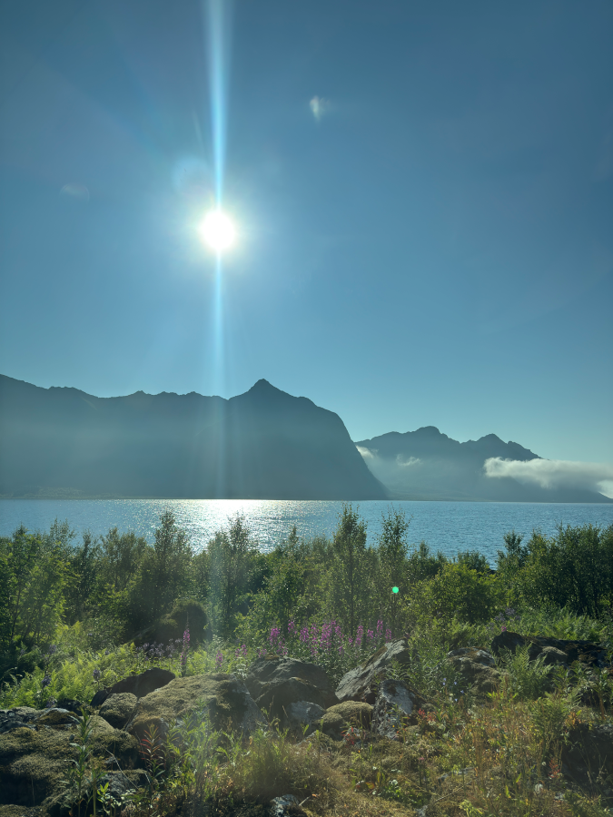

Den første dagen av sommerferien dro jeg hjem til Storsteinnes, hvor jeg syklet og hadde fester med vennene mine. Så ga naboen vår oss en båt, som vi umiddelbart tok med ut på fisketur og fanget mye fisk.

Et par dager senere dro jeg tilbake til Tromsø, og vennen min kom på besøk i et par dager. Etter det flyttet jeg inn hos faren min, fordi jeg bodde alene og det er dyrt om sommeren. Dagen etter dro jeg hjem igjen, hvor vennene mine og jeg besteg Fugltind (1033 meter). Det var veldig kult.

I begynnelsen av juli kom moren min og lillebroren min på besøk fra Ukraina. Vi dro til parker et par ganger, svømte mye og bare slappet av. Jeg dro på fisketur mange ganger og fanget mye laks. Denne måneden brukte jeg mye tid på å gå turer med vennene mine. Vi spilte spill, gikk på fjellturer og dro på fisketur. Jeg lånte også bilen til faren min, og vi dro på biltur. I slutten av juli dro jeg på campingtur med familien min på Senja. Vi svømte og hadde det veldig gøy.

Etter det ble jeg bare i Tromsø og gjorde ingenting. Men på slutten av måneden dro vi tilbake til Finland for å slappe av i skogen. I begynnelsen av august, da moren min og broren min dro, dro jeg til Sherpatrappa med vennen min. Og så skjedde det ikke noe mer. Jeg var sammen med venner, dro på fisketur, spilte spill og gikk turer med kjæresten min. Slik var sommeren min.